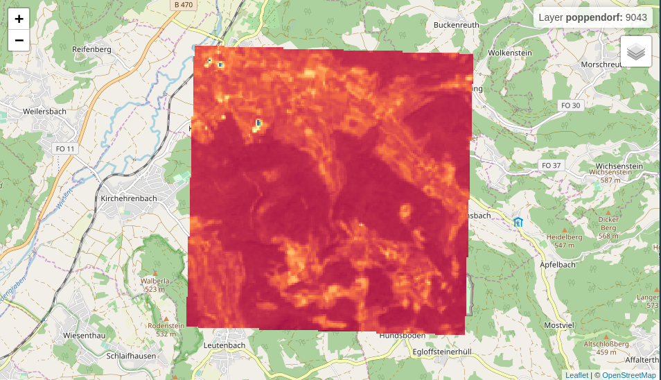

leafem provides extensions for package leaflet many of which are used by package mapview. The intention of this package is to enhance leaflet functionality to provide a more GIS-like feeling when plotting spatial data interactively.
Installation
You can install the released version of leafem from CRAN with:
install.packages("leafem")Extensions
addFeatures
library(leaflet)
leaflet() %>% addProviderTiles("OpenStreetMap") %>% addFeatures(data = breweries91)
garnishMap
library(leaflet)
m <- leaflet() %>% addProviderTiles("OpenStreetMap")
garnishMap(m, addMouseCoordinates)
addHomeButton
library(leaflet)
library(raster)
m <- leaflet() %>%
addProviderTiles("OpenStreetMap") %>%
addCircleMarkers(data = breweries91) %>%
addHomeButton(extent(breweries91), "breweries91")
m
addImageQuery
library(leaflet)
library(plainview)
leaflet() %>%
addProviderTiles("OpenStreetMap") %>%
addRasterImage(poppendorf[[1]], project = TRUE, group = "poppendorf",
layerId = "poppendorf") %>%
addImageQuery(poppendorf[[1]], project = TRUE,
layerId = "poppendorf") %>%
addLayersControl(overlayGroups = "poppendorf")
addLogo
img <- "https://www.r-project.org/logo/Rlogo.svg"
leaflet() %>% addTiles() %>% addLogo(img, url = "https://www.r-project.org/logo/")
Code of Conduct
Please note that the ‘leafem’ project is released with a Contributor Code of Conduct. By participating in this project you agree to abide by its terms.